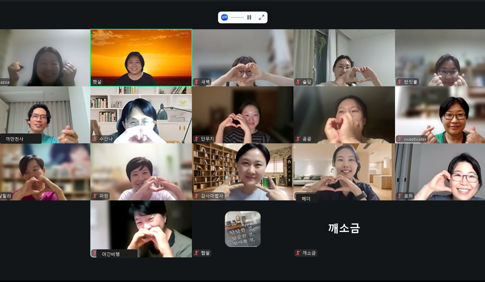
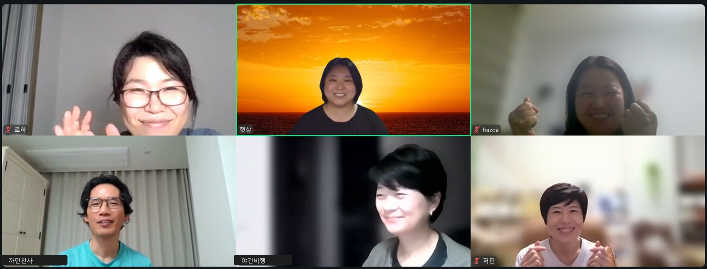
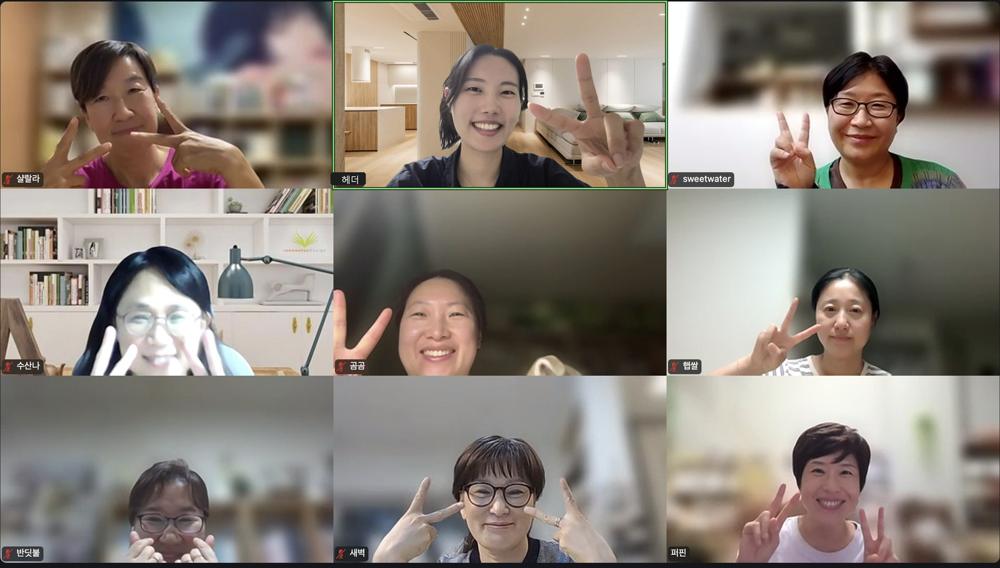
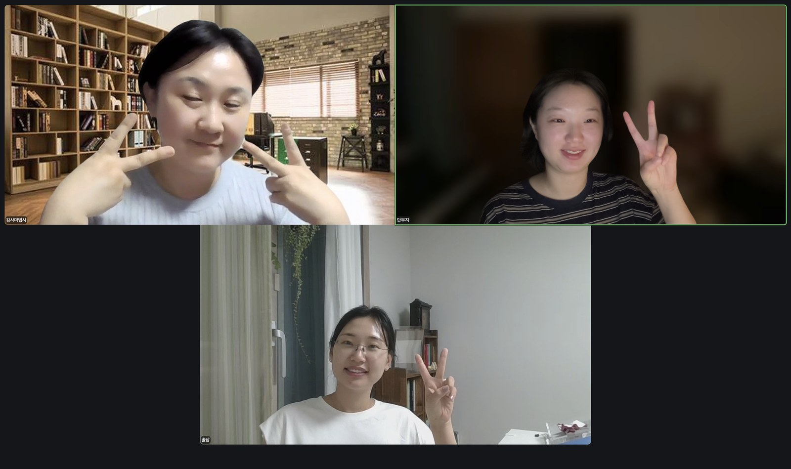

네 번째 공유회. 열 주 동안 모은 글의 아카이브와, 딸을 위해 만든 영어 앱과, 서른세 곡을 다 걸고 온 3기의 마지막 발표. 그리고 나미브 사막에서 이어진 밤

밤 열 시, 방이 하나로 모였다. 퍼핀이 먼저 부탁을 했다. 사막으로 흩어지기 전에 사진부터 찍자고. 왜 그렇게 사진을 안 찍는지 모르겠다고.
근황이 한 바퀴 돌았다. 한 분은 요즘 집 정리를 한다고 했다. 방 하나를 통째로 책방으로 쓰고 있었는데, 한쪽 벽에 붙은 책을 오백 권쯤 비웠다. 자기 계발서, 취미, 요리책. 버리지 못하고 오래 옮겨만 다니던 것들이었다. 싹 버리고 나니 후련하다고, 버리면서 살아야겠다는 걸 많이 느꼈다고 했다.
하조아 님은 단무지 님이 주신 서재를 깔아 잘 쓰고 있다고 했다. 정리가 하나도 안 돼 답답했는데, 서재에 소피아라는 이름을 붙이고 소피아야 소피아야 부르면서 한다고. 에이전트도 로컬에서 돌린다. 새벽 님은 제주에 다녀온 지 일주일이 안 됐다고 했다. 일주일이 금방 가서 정신이 하나도 없다고. 솔담 님은 제주에서 돌아와 쉬면서 앞으로 뭘 할지 이것저것 시도해 보는 중이라고 했다. 나머지 인사는 소그룹에서 나누기로 했다.
첫 순서는 수산나 님이었다. 특별한 성과는 없다는 말로 열었다. 클로드가 열 주가 됐다고 하더라며, 그 열 주를 어떻게 보냈는지 보여 주겠다고.
집이 둘이다. 사막여우가 사는 집은 루비, 에이전트들이 사는 집은 사파이어. 사파이어에는 총괄 로즈가 있고 그 아래 아홉이 산다. 상담을 받아 주는 릴리, 장부를 맡은 자스민, 논문과 학회 자료를 정리하는 이, 독서를 정리하는 라벤더, 교회 봉사 순번표를 짜 주는 민트, 스케줄, 사진, 컴퓨터를 봐주는 세이지. 매일 아침 열 시에는 영어 오 분. 일상 회화가 아니라 자기가 쓴 저널과 서평 파일을 놓고 대화한다. 단어가 막히면 알려 준다.
모닝페이지는 쉰여섯 편이 됐다. 토요일 새벽마다 하는 낭독 나눔을 한번 먹여 봤더니 카드를 만들어 줘서 인스타에 올렸다. 그리고 서평. 2021년부터 생각학교에서 책을 읽을 때마다 적어 온 서평을 한데 모았다. 작가별로 모아 달라고 하니, 이름을 치면 그 작가의 서평이 나온다. 울프는 열세 권 가운데 열 권까지 읽었고, 『잃어버린 시간을 찾아서』도 열세 권 중 열 권째다. 저널은 이백열여섯 편, 목록쓰기는 백다섯 편. 글자 수로는 십일만 자쯤 된다.
약사로 일한다. 전화로 상담할 때 말로만 물으면 한계가 있어 답답했다. 그래서 상담지를 만들었다. 누르면 바로 뜨고, 눈으로 보면서 체크하니 사람들이 훨씬 정확하게 답한다. 학회 밴드에 매일 올라오는 사례와 정보도 증상을 치면 바로 나오게 정리해 두었다. 채팅창에 햇살 님이 적었다. 서평부자 수산나님. 같은 걸 나눠도 같은 게 없죠.
"저는 제 글을 모았다는 게 너무 뿌듯하고 너무 좋은 거예요."
— 수산나 님 · 인사이트 공유
에이아이의 도움을 받았지만 에이아이가 할 수 없는, 나만이 할 수 있는 것이라고 했다. 매일 아침에 쓰는 일도 서평을 쓰는 일도 정말 힘든데, 그 힘든 것을 모아 놓으니 어마어마한 글이 되더라고. 와, 정말 감탄이 절로 나온다는 말이 방에서 나왔다.
로하 님 차례에 화면이 한 번 바뀌었다. 컴퓨터가 갑자기 먹통이 돼 핸드폰으로 들어왔다가, 발표 직전에 다시 컴퓨터로 들어왔다. 다행이라는 말이 몇 번 오갔다.
아이 영어 회화를 알아보던 참에 그냥 내가 만들어 볼 수 있겠구나 싶었다고 했다. 아이가 읽은 영어책들을 넣어 주니 아이 수준에 맞게 시작됐다. 따라 말하기가 있고, 회화가 있고, 읽은 책 이야기도 한다. 딸용과 아들용을 따로 만들었다. 이름은 에마.
딸에게 보여 줬더니 시시하다고 했다. 정해진 것만 나오니까. 진짜 유료 앱처럼 쓰려면 API 키를 받아야 한다는 걸 그때 배웠다. 하다 보면 진화하는구나, 그걸 그렇게 깨달았다고 했다. 워크숍 전에는 다른 분들이 용량이 모자란다는 게 무슨 말인지 몰랐는데, 만들다 보니 하루에 세 번씩 끊기고 주간 한도까지 그날 다 썼다.
또래 아이를 키우는 친구들에게 보여 줬더니 코딩을 언제 배웠냐고 물었다. 코딩이 아니라 우리 말로만 하면 다 만들 수 있는 거라고 답했다. 같이 책을 읽는 친구들이었다. 그 자리에서 이야기가 한곳으로 모였다. 기술을 배울 게 아니라 왜 해야 하는지, 무엇을 해야 하는지를 알아야 한다고.
"만드는 것은 결국 디퍼님들 안에 다 있어요. 내게 필요한 것, 내가 해야 하는 것, 그 아이디어도 본인이 다 가지고 계시기 때문에."
— 퍼핀 · 전체 방
그 밤의 발표 넷은 발표 영상 네 편으로 남겼다. 하나 둘 셋, 사진을 찍고 각자의 사막으로 갔다. 나미브, 도도, 영크크. 소그룹으로 들어가는 단추가 뜨지 않아 방을 한 번 다시 만들었다.
나미브의 사회는 햇살 님이 봤다. 조금 늦게 깨소금 님이 들어왔다. 그날 3기를 수료하는 분이고, 3기의 마지막 발표였다. 왕초보의 기본을 한 것이라 그냥 하는 데 의의를 뒀다고 하며 화면을 열었다.
발표 자료의 제목은 이랬다. 같은 도구, 다른 재료 — AI와 문법 한 달 여정. 새벽에 손으로 쓴 종이 한 장으로 하루를 연다는 부제가 붙어 있었다. 우리가 다 같은 과정을 하고 있지만 어쨌든 다른 재료로 각자 여정을 하고 있으니까, 그렇게 만들어 달라고 했더니 만들어 주더라고 했다. 자료 자체를 시키면 된다는 건 햇살 님께 여쭤 알았다.
8월 27일부터 그날 아침까지 모닝페이지와 사막여우를 매일 했다. 여정기록 서른세 곡을 다 걸었고, 오아시스는 스물세 번, 씨앗 문장은 쉰여덟 개가 나왔다. 손으로 쓴 종이를 사진으로 찍어 여우에게 먹이면 생각지 못한 피드백까지 돌아온다. 그러면 다시 종이로 가서 줄을 긋거나 키워드를 적는다. 같은 주제인데도 답이 조금씩 변했다. 모닝페이지를 다시 훑어보는 편이 아닌데, 삼 일 차엔 이렇게 대답하셨는데 지금은 이렇게 하시네요, 하고 여우가 짚어 줬다. 몰랐던 자기 상태를 그렇게 알았다. 지금의 시기를 조금 더 객관적으로 볼 수 있게 됐다고 했다.
중간에 여우가 묻지 않은 답을 스스로 지어 넣은 일이 있었다. 기록하기 전에 한 번 되묻고, 맞아 하면 그때 저장하는 것으로 고쳤다.
"아무도 보지 않는 자리에서 손으로 끝까지 해온 사람. 이제 그 손이, 나를 몰아세우는 대신 나를 보듬어 준다."
— 깨소금 님의 한 달이 남긴 문장 · 나미브
근황이 돌았다. 로하 님은 워크숍 이후에 클로드 코드의 위력을 알게 됐다고 했다. 용량이 모자라다는 걸 자기도 느껴서 오히려 기뻤다고. 워크숍을 종종 하면 좋겠다는 말을 덧붙였다.
까만천사 님은 문법 때 손으로 쓰는 모닝페이지와 목록쓰기를 둘 다 했다. 성격이 비슷한 두 가지를 겹쳐 하려니 벅차서, 논리에 들어와서는 목록쓰기 하나로 줄였다. 새벽마다 하는 게 루틴이 되니 도움이 컸다고 했다. 요즘은 맨발로 걷다가 떠오르는 게 있으면 그 자리에서 열 문장쯤 적어 주고받고, 그 대화를 집에 와서 사막여우에게 먹인다. 이 대화를 GEB나 『존재와 무』에 비추어 피드백해 달라고 했더니 이상한 고리에 걸리는 대목이며 자기기만 같은 자리를 짚어 줬다. 석학들이 수백 년 전에 다 적어 놓은 것을 우리가 모르고 있을 뿐이라는 생각이 들었다고. 모아 둔 자료를 차차 긱어스에 올리겠다고 했다. 햇살 님이 반겼다. 카톡방은 기수가 바뀌면 찾기가 어려워지는데 긱어스에 두면 두고두고 볼 수 있다고.
한 분은 근무가 바뀌어 적응하느라 요즘은 잘 못 쓴다고 했다. 유일하게 하는 것이 새벽 다섯 시 오십 분이다. 늦든 빠르든 인터넷이 되든 안 되든 햇살 님의 선라이즈 모닝 화면으로 들어가 여섯 시 이십 분까지 몇 자를 적는다. 그 힘으로 사는 것 같다고 했다. 구조를 만들어야 내가 움직이는구나, 그 생각을 늘 하게 된다고.
"까만천사님의 AI가 내주는 건 정말 까만천사님을 닮아 있고, 로하님이 해주는 건 로하님을 닮아 있고… 결국 우리가 넣어 주고 우리가 걸어온 길이 거기 보인다."
— 나미브의 한 디퍼님
제주에서 나미브가 까만천사 님만 빼고 다 모였는데 단체 사진을 못 찍었다고, 햇살 님이 그게 아쉽다고 했다.
시간이 조금 남았다. 햇살 님은 매주 공유를 준비해 둔다며, 아무도 허락하지 않았지만 하겠다고 하고 화면을 열었다.
포근나루 홈페이지를 깔끔하게 바꿨다. 브랜드 색에 집착하던 것을 홈페이지에서는 버리기로 했다. 없던 소식함을 만들어 한 주씩 보이게 했고, 월요일마다 새벽의 흐름이라는 주간 회고가 올라간다. 선라이즈 모닝 시간에 뭘 써야 하느냐고 묻는 분들이 있어 시작한 일이다. 형식 없이 의식의 흐름대로 쓰면 된다고 알려 드려도 어려워하는 분들을 위해, 이렇게 쓰고 있다고 보여 준다. 원글은 올리지 않는다. 자기 글에서 문장 하나를 골라 시집 발췌하듯 보이고, 결만 보여 준다. 월간 회고도 있다.
아스트라도 시작했다. 디자이너 루나가 만든 에이전트 조직도에 열일곱이 올라 있다. 포근나루, 아스트라, 디퍼살롱 세 작업실. 볼트도 셋이 되어 서로 볼 수 있게 해 두었다. 픽셀아트로 갤러리를 만들자고만 했더니 이모지로 만들어 왔다. 영어 앱은 만드는 중이다. 한 문장을 배우고 보너스처럼 이탈리아어와 스페인어까지 함께 본다. 모바일로 쓴다. 모닝페이지는 노트북으로 쓴다. 하루에 쓸 시간이 삼십 분뿐인데 손으로 쓰면 한 시간이 걸려 하던 말이 끊겼다. 목록쓰기가 자산이 되어 언젠가 퇴고를 거쳐 책이 되는 것이 목표다.
퍼핀이 문을 열고 나미브에 들어왔다. 깨소금 님이 서른세 곡을 다 걸었다는 이야기가 오갔고 축하가 돌았다. 까만천사 님이 말했다. 이게 아니었다면 진짜 아무것도 못 했을 텐데. 새로 뭔가를 만들면 일단 나눠 드려야겠다고 생각한다고. 프롬프트도 만들어 나눈다고. 처음부터 프롬프트를 칼같이 다듬어 넣는 쪽이 아니라, 궁금한 게 하나 생기면 그걸 던지고 거기서 대화가 시작되는 쪽이라고 했다. 그러다 의도치 않게 뭔가가 하나씩 딸려 온다고.
"분명히 어떤 물꼬가 여기서 터지는 것 같아요."
— 까만천사 님 · 나미브
너무 잘하고 계세요, 하고 퍼핀이 답했다. 퍼핀이 함께 있는 유일한 나미브 사진이겠다는 말과 함께 하나 둘 셋, 사진을 한 장 찍고 밤이 끝났다.



아무도 가질 수 없는
나만의 별이 되겠다는 생각이 들어서
우리가 다 같은 과정을 하고 있지만,
어쨌든 다른 재료로
각자 여정을 하고 있으니까.
깨소금 님이 3기를 수료하며 남긴 말. 다음 공유회 일정은 다음 공지로 전한다. 9월 21일 월요일 밤, 2기 논리의 달이 닫힌다.
SESSION — 2026.09.17 THU 22:03~23:01 · 디퍼 인사이트 공유회 4회차 · 전체 방 + 나미브 사막 · 햇살 님 녹화 57분 35초 · PROJECT B-612
발표 — 수산나 님 · 로하 님 · 깨소금 님 · 햇살 님
도도 사막과 영크크 사막의 이야기는 녹음이 닿는 대로 덧붙입니다. 사진 — 전체·나미브는 햇살 님, 도도는 헤더 님, 영크크는 단무지 님이 남겨 주셨습니다.
REF — 발표 영상 네 개의 화면, 한 달의 재료 / 3회차 기록 다섯 개의 화면, 다섯 개의 현장
NOTE — 녹음 전사 기반 재구성 · 인용은 발언의 결을 살려 다듬음 · 개인·사적 대목 제외 · 이 글은 디퍼님과 별지기만 보는 자리입니다.